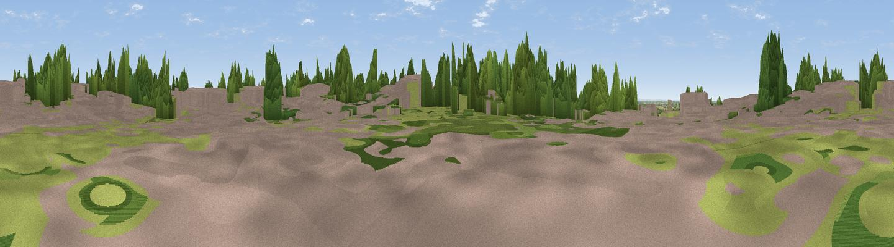

Viewpoint near Scunthorpe
#41697 in England · top 78% of its area beats it · near ScunthorpeWhere it is
The exact computed spot (SE 88576 09436). Click the marker for map links.
The view, rendered

A 360° render of this exact spot computed from the terrain model, tree cover and land cover — summer colours, afternoon light, calibrated against photographs of famous viewpoints. Real trees, hedges and buildings will differ in detail.
The panorama
Grey silhouette: terrain skyline in each direction (720 bearings, Earth curvature and refraction included). Dashed green: skyline with trees (+15 m) and buildings (+8 m) as obstacles. Blue strip: how far the ground is visible on each bearing.
Where the view opens
Wedge length = distance to the farthest visible ground on that bearing (vegetation-aware). Rings at 10, 25 and 50 km.
What fills the view
32% built-up · 29% cropland · 20% grassland · 19% woodland
Angular shares of the visible panorama (visual magnitude), not map area. Landscape diversity 0.60 (0–1 Shannon).
Key numbers
More beautiful places nearby
The staircase of upgrades: each row has a higher view potential than everything closer. Driving times are estimates from straight-line distance, calibrated against real road routing — check an actual route before setting out.
| Place | Direction | Drive | Score |
|---|---|---|---|
| Viewpoint near Scunthorpe | NE · 5 km | ~11 min | 28.3 |
| Viewpoint near Appleby | ENE · 6 km | ~13 min | 34.5 |
| Viewpoint near Burton upon Stather | N · 8 km | ~17 min | 53.6 |
| Viewpoint near Burton Stather | N · 10 km | ~20 min | 59.1 |
| Viewpoint near Burton Stather | N · 11 km | ~21 min | 60.6 |
| Viewpoint near Stainforth | W · 23 km | ~38 min | 61.9 |
| Beacon Hill | SW · 24 km | ~39 min | 63.1 |
| Viewpoint near Nettleton | ESE · 24 km | ~39 min | 64.7 |
53.57406, -0.66381 · source: osm peak · position refined by local search. Computed location — check access rights before visiting.